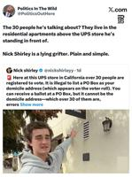

joshuark quotes a report from BleepingComputer: Microsoft is investigating a known issue that causes the mouse pointer to disappear in the classic Outlook desktop email client for some users. This bug has been acknowledged almost two months after the first reports started surfacing online, with users saying that Outlook became unusable after the mouse pointer vanished while using the app.
[...] Microsoft explained in a recent support document that the mouse pointer (and in some cases the cursor) will suddenly vanish as users move it across Outlook's interface. "When using classic Outlook, you may find that the mouse pointer or mouse cursor disappears as you move the pointer over the Outlook interface," it said. "Although the mouse pointer is not there, the email in the message list will change color as you hover over it. This issue has also been reported with OneNote and other Microsoft 365 apps to a lesser degree."
Microsoft added that the Outlook team is investigating the issues and will provide updates as more information becomes available. While a timeline for a permanent fix is not yet available, Microsoft has offered three temporary workarounds that require affected users to click an email in the message list when the cursor disappears, which may cause it to reappear. Alternatively, switching to PowerPoint, clicking into an editable area, and then returning to Outlook may also restore the mouse pointer.
Read more of this story at Slashdot.
OpenAI has formed a multi-year "Frontier Alliance" with four consulting heavyweights to accelerate enterprise adoption of its no-code AI agent platform, OpenAI Frontier. TechCrunch reports: The alliance includes multi-year partnerships between OpenAI and four major consulting firms, Boston Consulting Group (BCG), McKinsey, Accenture and Capgemini, to sell its enterprise products. OpenAI's Forward Deployed Engineering team will work with the consulting giants to help them implement OpenAI's enterprise-focused technologies like OpenAI Frontier into customers' tech stacks.
The company launched OpenAI Frontier in early February. The no-code open software allows users to build, deploy, and manage AI agents both built on OpenAI's AI models and beyond. OpenAI argues in its latest announcement that consultants are the right avenue to get enterprises on board.
"AI alone does not drive transformation. It must be linked to strategy, built into redesigned processes, and adopted at scale with aligned incentives and culture to deliver sustained outcomes," BCG CEO Christoph Schweizer said in OpenAI's blog post. "Our expanded partnership combines OpenAI's Frontier platform with BCG's deep industry, functional, and tech expertise and BCG X's build-and-scale capabilities to drive measurable impact with safeguards from day one."
Read more of this story at Slashdot.
An anonymous reader quotes a report from Reuters: Researchers at ASML Holding say they have found a way to boost the power of the light source in a key chip making machine to turn out up to 50% more chips by decade's end, to help retain the Dutch company's edge over emerging U.S. and Chinese rivals. ASML is the world's only maker of commercial extreme ultraviolet lithography (EUV) machines, a critical tool for chipmakers such as TSMC, Intel and others in producing advanced computing chips. "It's not a parlor trick or something like this, where we demonstrate for a very short time that it can work," Michael Purvis, ASML's lead technologist for its EUV source light, said in an interview. "It's a system that can produce 1,000 watts under all the same requirements that you could see at a customer," he added, speaking at the company's California facilities near San Diego. [...]
With the technological advance revealed on Monday, which is being reported here for the first time, ASML aims to outdistance any would-be rivals by improving the most technologically challenging aspect of the machines. This is the quest to generate EUV light with the right power and properties to turn out chips at high volume. The company's researchers have found a way to boost the power of the EUV light source to 1,000 watts from 600 watts now. The chief advantage is that greater power translates into the ability to make more chips every hour, helping to lower the cost of each. Chips are printed similar to a photograph, where the EUV light is shone on a silicon wafer coated with special chemicals called a photoresist. With a more powerful EUV light source, chip factories need shorter exposure times. "We'd like to make sure that our customers can keep on using EUV at a much lower cost," Teun van Gogh, executive vice president for the NXE line of EUV machines at ASML, told Reuters. Van Gogh said customers should be able to process about 330 silicon wafers an hour on each machine by the end of the decade, up from 220 now. Depending on the size of a chip, each wafer can hold anywhere from scores to thousands of the devices.
ASML got the power boost by doubling down on an approach that already places its machines among the most complex inventions of humans. To produce light with a wavelength of 13.5 nanometers, ASML's machine shoots a stream of molten droplets of tin through a chamber, where a massive carbon dioxide laser heats them into plasma. This is a superheated state of matter in which the tin droplets become hotter than the sun and emit EUV light, to be collected by precision optic equipment supplied by Germany's Carl Zeiss AG and fed into the machine to print chips. The key advancements in Monday's disclosure involved doubling the number of tin drops to about 100,000 every second, and shaping them into plasma using two smaller laser bursts, as opposed to today's machines that use a single shaping burst. [...] ASML believes the techniques it used to hit 1,000 watts will unlock continued advances in the future, Purvis said, adding, "We see a reasonably clear path toward 1,500 watts, and no fundamental reason why we couldn't get to 2,000 watts."
Read more of this story at Slashdot.
Linus Torvalds has pondered his professional mortality in a self-deprecating post to mark the release of the first release candidate for version 7.0 of the Linux kernel. From a report: "You all know the drill by now: two weeks have passed, and the kernel merge window is closed," he wrote in the post announcing Linux 7.0 rc1. "We have a new major number purely because I'm easily confused and not good with big numbers." Torvalds pointed out that the numbers he applies to new kernel releases are essentially meaningless.
"We haven't done releases based on features (or on "stable vs unstable") for a long, long time now. So that new major number does *not* mean that we have some big new exciting feature, or that we're somehow leaving old interfaces behind. It's the usual "solid progress" marker, nothing more.â
He then reiterated his plan to end each series of kernels to end at x.19, before the next release becomes y.0 -- a process that takes about 3.5 years -- and then pondered what happens when the next version of Linux reaches a number he finds uncomfortable. "I don't have a solid plan for when the major number itself gets big," he admitted, "by that time, I expect that we'll have somebody more competent in charge who isn't afraid of numbers past the teens. So I'm not going to worry about it."
Read more of this story at Slashdot.
Despite AI's progress in building complex software, the ubiquitous PDF remains something of a grand challenge -- a format Adobe developed in the early 1990s to preserve the precise visual appearance of documents. PDFs consist of character codes, coordinates, and rendering instructions rather than logically ordered text, and even state-of-the-art models asked to extract information from them will summarize instead, confuse footnotes with body text, or outright hallucinate contents, The Verge writes.
Companies like Reducto are now tackling the problem by segmenting pages into components -- headers, tables, charts -- before routing each to specialized parsing models, an approach borrowed from computer vision techniques used in self-driving vehicles. Researchers at Hugging Face recently found roughly 1.3 billion PDFs sitting in Common Crawl alone, and the Allen Institute for AI has noted that PDFs could provide trillions of novel, high-quality training tokens from government reports, textbooks, and academic papers -- the kind of data AI developers are increasingly desperate for.
Read more of this story at Slashdot.
The first fiber-optic cable ever laid across an ocean -- TAT-8, a nearly 6,000-kilometer line between the United States, United Kingdom, and France that carried its first traffic on December 14, 1988 -- is now being pulled off the Atlantic seabed after more than two decades of sitting dormant, bound for recycling in South Africa.
Subsea Environmental Services, one of only three companies in the world whose entire business is cable recovery and recycling, began the operation last year using its new diesel-electric vessel, the MV Maasvliet, and had already brought 1,012 kilometers of the cable to the Portuguese port of Leixoes by August.
TAT-8, short for Trans-Atlantic Telephone 8, was built by AT&T, British Telecom, and France Telecom, and hit full capacity within just 18 months of going live. A fault too expensive to repair took it out of service in 2002. The recovered cable is being shipped to Mertech Marine in South Africa, where it will be broken down into steel, copper, and two types of polyethylene -- all commercially valuable, especially the high-quality copper at a time when the International Energy Agency projects global shortages within a decade.
Read more of this story at Slashdot.
Climate scientists trying to predict how much hotter the planet will get have long grappled with a surprisingly stubborn problem -- clouds, which both reflect sunlight and trap heat, account for more than half the variation between climate predictions and are the main reason warming projections for the next 50 years range from 2 to 6 degrees Celsius.
Two research groups are now racing to close that gap using AI, though they disagree sharply on method. Tapio Schneider at Caltech built CLIMA, a model that uses machine learning to optimize cloud parameters within traditional physics equations; it will be unveiled at a conference in Japan in March. Chris Bretherton at the Allen Institute for AI took a different path -- his ACE2 neural network, released in 2024, learns from 50 years of atmospheric data and largely bypasses physics equations altogether.
Read more of this story at Slashdot.
OpenAI CEO Sam Altman is pushing back on growing concerns about AI's environmental footprint, dismissing claims about ChatGPT's water consumption as "totally fake" and arguing that the fairer way to measure AI's energy use is to compare it against humans.
In an interview with Indian Express, Altman acknowledged that evaporative cooling in data centers once made water usage a real concern but said that is no longer the case, calling internet claims of 17 gallons of water per query "completely untrue, totally insane, no connection to reality."
On energy, he conceded it is "fair" to worry about total consumption given how heavily the world now relies on AI, and called for a rapid shift toward nuclear, wind and solar power. He took particular issue with comparisons that pit the cost of training a model against a single human inference, noting it "takes like 20 years of life and all of the food you eat" before a person gets smart -- and that on a per-query basis, AI has "probably already caught up on an energy efficiency basis."
Read more of this story at Slashdot.
An anonymous reader quotes a report from the Financial Times: Officials working with Donald Trump's "Board of Peace" are exploring setting up a stablecoin for Gaza as part of efforts to reshape the devastated Palestinian enclave's economy, according to five people familiar with the discussions. The talks around introducing a stablecoin -- a type of cryptocurrency whose value is pegged to a mainstream currency, such as the US dollar -- are at a preliminary stage, and many details of how one could be introduced in Gaza remain to be determined.
But officials have discussed the idea as part of their plan for the future of the enclave, where economic activity collapsed during Israel's two-year war with Hamas and the traditional banking and payments system has been severely impaired. A person familiar with the project said the stablecoin was expected to be tied to the US dollar, with the hope that Gulf Arab and Palestinian companies with expertise in the field of digital currencies will help spearhead the effort. "This will not be a 'Gaza Coin' or a new Palestinian currency, but a means to allow Gazans to transact digitally," the person said.
Work on the idea is being led by Liran Tancman, an Israeli tech entrepreneur and former reservist who is now working as an unpaid adviser to Trump's "Board of Peace," the US-led body tasked with rebuilding Gaza, according to two people familiar with the matter. [...] According to the person familiar with the project, the "Board of Peace" and NCAG will decide on the stablecoin's regulatory framework and access, although "nothing definitive" has yet been finalized. Speaking at a meeting of the "Board of Peace" in Washington last week, Tancman said the NCAG was working on building "a secure digital backbone, an open platform enabling e-payments, financial services, e-learning, and healthcare with user control over data", but did not elaborate.
Read more of this story at Slashdot.
Panasonic is handing over the manufacturing, marketing, and sales of its TVs to Shenzhen-based Skyworth, effectively exiting in-house TV production. Ars Technica reports: Skyworth is a Shenzhen-headquartered TV brand. The company claims to be "a top three global provider of the Android TV platform." In July, research firm Omdia reported that Skyworth was one of the top-five TV brands by sales revenue in Q1 2025; however, Skyworth hasn't been able to maintain that position regularly. Panasonic made its announcement at a "launch event," FlatpanelsHD reported today. During the event, a Panasonic representative reportedly said: "Under the agreement the new partner will lead sales, marketing, and logistics across the region, while Panasonic provide expertise and quality assurance to uphold its renowned audiovisual standards with full joint development on top-end OLED models."
Panasonic also said that it will provide support "for all Panasonic TVs sold up to March 2026 and all those available from April." Skyworth-made Panasonic TVs will be sold in the US and Europe. In the latter geography, the companies are aiming for double-digit market share. [...] The news means there's virtually no TV production happening in Japan anymore, as other Japanese companies, like Sharp, Toshiba, Hitachi, and Pioneer, have already exited TV production. Earlier this year, Sony announced that it was ceding control of its TV hardware business to TCL.
Read more of this story at Slashdot.
IBM shares plunged nearly 13% on Monday after Anthropic published a blog post arguing that its Claude Code tool could automate much of the complex analysis work involved in modernizing COBOL, the decades-old programming language that still underpins an estimated 95% of ATM transactions in the United States and runs on the kind of mainframe systems IBM has sold for generations.
Anthropic said the shrinking pool of developers who understand COBOL had long made modernization cost-prohibitive, and that AI could now flip that equation by mapping dependencies and documenting workflows across thousands of lines of legacy code. The sell-off deepened a rough 2026 for IBM, whose shares are now down more than 22% year to date.
Read more of this story at Slashdot.
U.S. artificial-intelligence startup Anthropic said three Chinese AI companies set up more than 24,000 fraudulent accounts with its Claude AI model to help their own systems catch up. From a report: The three companies -- DeepSeek, Moonshot AI and MiniMax -- prompted Claude more than 16 million times, siphoning information from Anthropic's system to train and improve their own products, Anthropic said in a blog post Monday.
Earlier this month, an Anthropic rival, OpenAI, sent a memo to House lawmakers accusing DeepSeek of using the same tactic, called distillation, to mimic OpenAI's products. Anthropic said distillation had legitimate uses -- companies use it to build smaller versions of their own products, for example -- but it could also be used to build competitive products "in a fraction of the time, and at a fraction of the cost." The scale of the different companies' distillation activity varied. DeepSeek engaged in 150,000 interactions with Claude, whereas Moonshot and MiniMax had more than 3.4 million and 13 million, respectively, Anthropic said.
Read more of this story at Slashdot.
A study published last week in PNAS found that people who regularly cause problems or make life difficult -- whom the researchers call "hasslers" -- are associated with measurably faster biological aging in those around them, at a rate of roughly 1.5% per additional hassler and about nine months of additional biological age relative to same-age peers.
The research drew on DNA methylation-based epigenetic clocks and ego-centric network data from a state-representative probability sample of 2,345 adults in Indiana, aged 18 to 103. Nearly 29% of respondents reported at least one hassler in their close network. The biological toll varied by relationship type: hasslers who were family members showed the strongest and most consistent associations with accelerated aging, while spouse hasslers showed no significant effect on either epigenetic measure.
The damage also went beyond aging clocks -- each additional hassler was associated with greater depression and anxiety severity, higher BMI, increased inflammation, and higher multimorbidity. When benchmarked against smoking, a major behavioral risk factor for aging, the hassler effect corresponded to roughly 13 to 17% of smoking's estimated impact on the same aging clocks.
Read more of this story at Slashdot.
A 7,000-word "doomsday" thought experiment from Citrini Research helped trigger an 800-point drop in the Dow, "painting a dark portrait of a future in which technological change inspires a race to the bottom in white-collar knowledge work," reports the Wall Street Journal. From the report: Concerns of hyperscalers overspending are out. Worries of software-industry disruption don't go far enough. The "global intelligence crisis" is about to hit. The new, broader question: What if AI is so bullish for the economy that it is actually bearish? "For the entirety of modern economic history, human intelligence has been the scarce input," Citrini wrote in a post it described as a scenario dated June 2028, not a prediction. "We are now experiencing the unwind of that premium."
Many of Monday's moves roughly aligned with the situation outlined by Citrini, in which fast-advancing AI tools allow spending cuts across industries, sparking mass white-collar unemployment and in turn leading to financial contagion. Software firms DataDog, CrowdStrike and Zscaler each plunged more than 9%. International Business Machines' 13% decline was its worst one-day performance since 2000. American Express, KKR and Blackstone -- all name-checked by Citrini -- tumbled. That anxiety, coupled with renewed uncertainty about trade policy from Washington, weighed down major indexes Monday. The Dow Jones Industrial Average led declines, falling 1.7%, or 822 points. The S&P 500 shed 1%, while the Nasdaq composite retreated 1.1%.
[...] Monday's market swings extended a run of AI-linked volatility. A small research outfit that has garnered a huge Substack following for macro and thematic stock research, Citrini said in its new post that software firms, payment processors and other companies formed "one long daisy chain of correlated bets on white-collar productivity growth" that AI is poised to disrupt. [...] Shares in DoorDash also veered 6.6% lower Monday after Citrini's Substack note called the delivery app a "poster child" for how new tools would upend companies that monetize interpersonal friction. In the research firm's scenario, AI agents would help both drivers and customers navigate food deliveries at much lower costs.
Read more of this story at Slashdot.
An anonymous reader shares a report: PayPal, the digital payments pioneer, is attracting takeover interest from potential buyers after a stock slide wiped out almost half of its value, according to people familiar with the matter.
The San Jose, California-based company has fielded meetings with banks amid unsolicited interest from suitors, the people said. At least one large rival is looking at the whole company, while some other suitors are only interested in certain PayPal assets, the people said, asking not to be identified because the information is private.
Buyer interest in PayPal is still at a preliminary stage and may not lead to a transaction, the people cautioned. Founded in the late 1990s, PayPal was an early mover in the world of digital payments. But the company now finds itself in a rut with its customers increasingly turning to alternative ways to pay for things. PayPal's shares have fallen around 46% in New York trading over the last 12 months, giving the company a market value of about $38.4 billion.
Read more of this story at Slashdot.
Vicky Ge Huang / Wall Street Journal : The administrator winding down Terraform Labs sues Jane Street, alleging it engaged in insider trading to profit from and ultimately hasten Terraform's collapse — The court-appointed administrator of Do Kwon's Terraform Labs alleged that Jane Street used nonpublic information from Terraform insiders to trade
Wall Street Journal : How Binance staffers found $1B was sent to sanctioned Iranian entities via the exchange, which dismantled their probe and suspended them after Trump pardoned CZ — Weeks after Trump pardoned Binance's founder, the company dismantled probe and suspended the investigators; Binance denied inquiry ended or staff fired for the concerns
Lora Kolodny / CNBC : Tesla sues California's DMV to reverse a ruling that found Tesla violated the law by falsely promoting its Autopilot and Full Self-Driving systems — Tesla is suing California's Department of Motor Vehicles to reverse a ruling that found the automaker violated the law by falsely promoting its cars' self-driving capabilities.
Reuters : A Trump administration official says DeepSeek's new model, expected next week, was trained on Nvidia Blackwell chips, in a potential US export control violation — Chinese AI startup DeepSeek's latest AI model, set to be released as soon as next week, was trained on Nvidia's (NVDA.O) …
Bloomberg : Sources: Anthropic has lined up $5B to $6B for an employee share sale at a valuation of about $350B; outside investors will be buying up the insider shares — Anthropic is offering some current and former employees the ability to sell shares in the company at a valuation of about $350 billion …
Axios : A DOD official says xAI has agreed to let the military use Grok in classified systems and agreed to the “all lawful use” standard, which Anthropic has refused — But the Pentagon is threatening Anthropic in a dispute over safeguards and may soon need a replacement.
The Information : Sources: AI chipmaker Cerebras confidentially files for a US IPO after withdrawing a previous IPO last year, and a listing could take place as soon as April — Cerebras Systems has again made a confidential filing for a U.S. public offering, according to people with knowledge of its plans.
Salvador Rodriguez / CNBC : Uber agrees to acquire SpotHero for an undisclosed sum, to offer parking reservation for events and at venues and airports; SpotHero was last valued at $290M — Uber said it's acquiring SpotHero, a company that provides a parking reservation app for crowded downtowns, sporting events and concerts.
Pia Singh / CNBC : IBM shares closed down 13.15% after Anthropic outlined in a blog post how Claude Code can automate the exploration and analysis phases of COBOL modernization — International Business Machines stock is getting slammed Monday, becoming the latest perceived victim of rapidly developing AI technology …
Annie Palmer / CNBC : Amazon plans to invest $12B in new data centers in Louisiana and says it worked with the local utility “to ensure we pay 100% of the costs” tied to the campus — Amazon said Monday it plans to spend $12 billion on new data center campuses in Louisiana and the infrastructure …
Angel Au-Yeung / Wall Street Journal : Some AI startups are boosting their valuations by raising capital in back-to-back or multitiered deals, raising questions about how much they are really worth — The race to get into hot AI startups has led to unequal deals for investors, raising questions about how much companies are really worth
Katie Fehrenbacher / Axios : Ubicquia, which provides software to utilities, cities, and companies to manage energy infrastructure like transformers, raised a $106M Series D — Ubicquia, which deploys digital tech for infrastructure, raised a $106 million Series D, CEO Ian Aaron tells Axios Pro exclusively.
Wall Street Journal : Anthropic says DeepSeek, MiniMax, and Moonshot violated its ToS by prompting Claude a combined 16M+ times and using distillation to train their own products — The allegations mirror those of OpenAI, which told House lawmakers that DeepSeek used ‘distillation’ to improve models
Echo Wang / Reuters : Internal memo: Lightricks, creator of photo editing app Facetune, is splitting its consumer app unit from its GenAI unit LTX to better capture the growth in AI — The creator of the Facetune photo editing app, Lightricks, is splitting its consumer app business from its generative AI video platform LTX …
Jack Pitcher / Wall Street Journal : Software stocks extended their weeks-long selloff on Monday; several of the biggest decliners were discussed in a post by Citrini Research — The weeks-long selloff in software stocks deepened Monday amid general unease about the threat posed by AI. — Software-makers AppLovin, CrowdStrike …